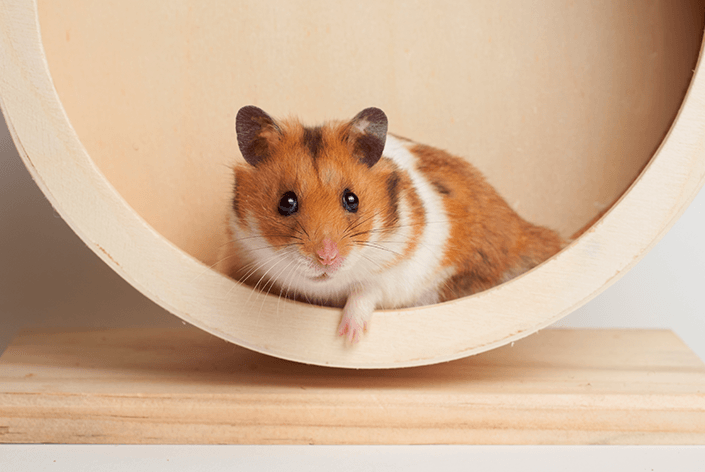

PIP | 3 MESES
HAMSTER | MACHO | PORTE PEQUENO
📍 Curitiba, BATEL
📅 28/07/2025
HISTÓRIA DE PIP
Pip é um hamster sírio de 3 meses, um pequeno sonhador de personalidade tranquila e curiosa. Seu maior desejo é uma família paciente que entenda sua natureza gentil, oferecendo um ambiente calmo onde possa se sentir seguro para ser ele mesmo.
Adote a Zoe e traga mais felicidade para a sua vida!